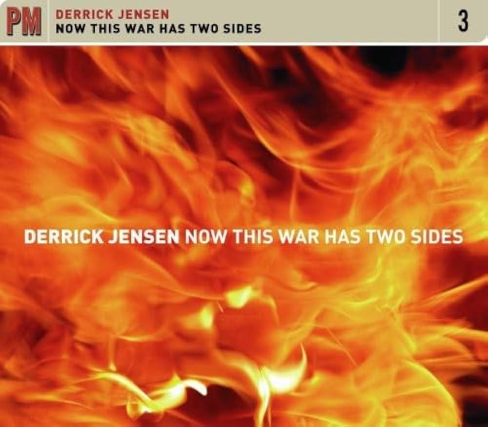
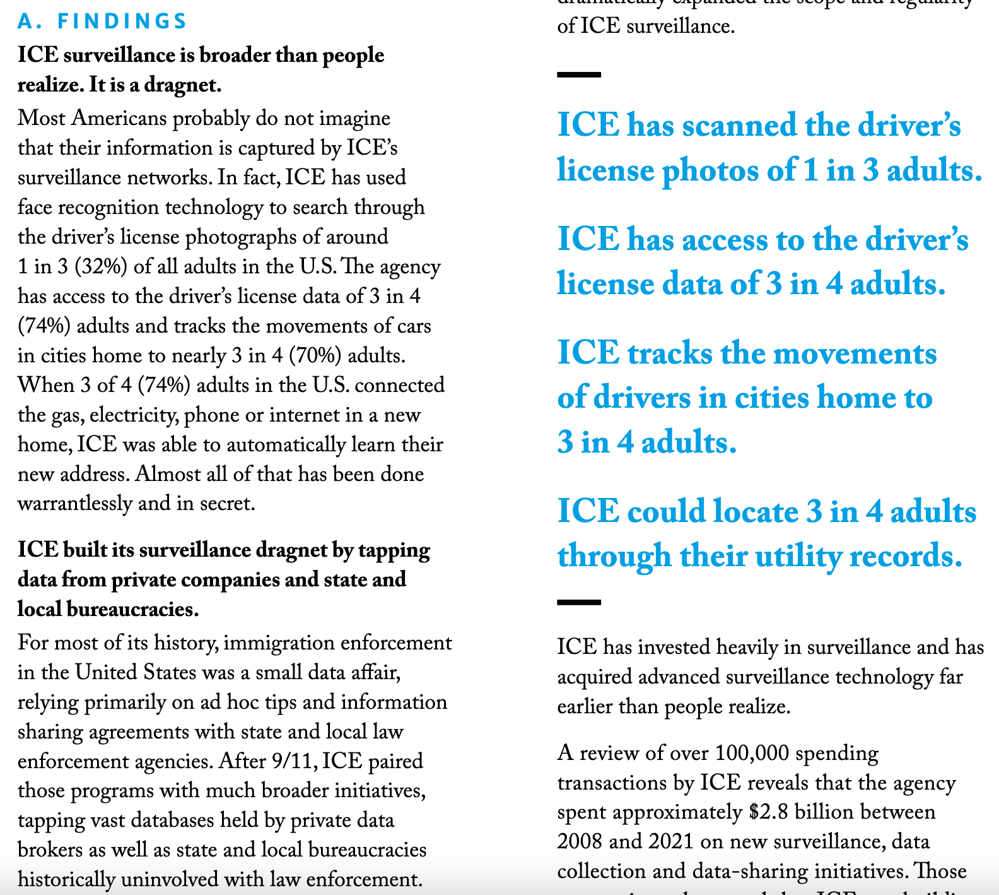

Week 9: From Data Ethics to Data Policy
DSAN 5450: Data Ethics and Policy
Spring 2026, Georgetown University
Schedule
Today’s Planned Schedule:
| Start | End | Topic | |
|---|---|---|---|
| Lecture | 3:30pm | 3:45pm | Final Projects → |
| 3:45pm | 4:15pm | Extended Recap → | |
| 4:15pm | 4:50pm | Contractual Power → | |
| Break! | 4:50pm | 5:10pm | |
| 5:10pm | 6:00pm | The Power of Mechanism Design → |
\[ \DeclareMathOperator*{\argmax}{argmax} \DeclareMathOperator*{\argmin}{argmin} \newcommand{\bigexp}[1]{\exp\mkern-4mu\left[ #1 \right]} \newcommand{\bigexpect}[1]{\mathbb{E}\mkern-4mu \left[ #1 \right]} \newcommand{\definedas}{\overset{\small\text{def}}{=}} \newcommand{\definedalign}{\overset{\phantom{\text{defn}}}{=}} \newcommand{\eqeventual}{\overset{\text{eventually}}{=}} \newcommand{\Err}{\text{Err}} \newcommand{\expect}[1]{\mathbb{E}[#1]} \newcommand{\expectsq}[1]{\mathbb{E}^2[#1]} \newcommand{\fw}[1]{\texttt{#1}} \newcommand{\given}{\mid} \newcommand{\green}[1]{\color{green}{#1}} \newcommand{\heads}{\outcome{heads}} \newcommand{\iid}{\overset{\text{\small{iid}}}{\sim}} \newcommand{\lik}{\mathcal{L}} \newcommand{\loglik}{\ell} \DeclareMathOperator*{\maximize}{maximize} \DeclareMathOperator*{\minimize}{minimize} \newcommand{\mle}{\textsf{ML}} \newcommand{\nimplies}{\;\not\!\!\!\!\implies} \newcommand{\orange}[1]{\color{orange}{#1}} \newcommand{\outcome}[1]{\textsf{#1}} \newcommand{\param}[1]{{\color{purple} #1}} \newcommand{\pgsamplespace}{\{\green{1},\green{2},\green{3},\purp{4},\purp{5},\purp{6}\}} \newcommand{\pedge}[2]{\require{enclose}\enclose{circle}{~{#1}~} \rightarrow \; \enclose{circle}{\kern.01em {#2}~\kern.01em}} \newcommand{\pnode}[1]{\require{enclose}\enclose{circle}{\kern.1em {#1} \kern.1em}} \newcommand{\ponode}[1]{\require{enclose}\enclose{box}[background=lightgray]{{#1}}} \newcommand{\pnodesp}[1]{\require{enclose}\enclose{circle}{~{#1}~}} \newcommand{\purp}[1]{\color{purple}{#1}} \newcommand{\sign}{\text{Sign}} \newcommand{\spacecap}{\; \cap \;} \newcommand{\spacewedge}{\; \wedge \;} \newcommand{\tails}{\outcome{tails}} \newcommand{\Var}[1]{\text{Var}[#1]} \newcommand{\bigVar}[1]{\text{Var}\mkern-4mu \left[ #1 \right]} \]
Final Project Tings
Project Management Tings
| Ting | Pros | Cons | Verdict |
|---|---|---|---|
| TasksBoard | Integrated with Google Workspace (@georgetown.edu emails) |
Free version useless (no share) | ❌ |
| Jira | Maybe most popular? | 30-day free trial | ❌ |
| Trello | Simpler than Jira (both owned by Atlassian) | 14-day free trial | ❌ |
| Airtable | Jeff uses this every day | .edu plan doesn’t include free users | ❌ |
| Notion | Jeff uses this v often, .edu plan has hackish way to include users for free | Force yall to sign up for new ting | ✅ |
Recap 0: Descriptive vs. Normative
Much of Part 1 has been adjusting to weirdness of normative reasoning
Descriptive reasoning looks like [Rules of math \(\implies \theta^* = 2.5\)], but [rules of math] part isn’t mentioned bc extraneous
- (Even if it was mentioned, intersubjective agreement not so hard, very few people fighting wars over “we should denote repeated addition with \(\otimes\) not \(\times\)!”)
Normative reasoning looks like [Antecedent A \(\implies\) Answer 1 but Antecedent B \(\implies\) Answer 2], and people do fight wars over A vs. B (implicitly or explicitly)
Part 2: Rapid cycling back and forth between normative and descriptive!
One new aspect: “Descriptive Ethics” (How do people act, not how should people act) \(\leadsto\) Study of Power
[What is] right, as the world goes, is only in question between equals in power; otherwise, the strong do as they please and the weak suffer what they must. (Thucydides 2013 c. 411 BC)
Recap 1: Privacy Policies Take a Long Time to Read!

Recap 2: Reading Privacy Policies \(\neq\) Understanding Privacy Policies!
- Reading vs. understanding implications / contingencies / ambiguities…
- NLP could (and should!) be helpful (“making privacy policies machine readable […] would help users match privacy preferences against policies offered by web services”), but mostly just reveals how bad the problem is:

The Adversarial-Sisyphusian Problem of Contracts
- Recall Intuitive Problem of Causal Inference: Correlation \(\nimplies\) Causation, but can do a bunch of work to overcome
- Adversarial-Sisyphusian Problem is one level worse 😱
- IPCI: You vs. discovered correlation (inanimate)
- ASPC: You vs. companies investing resources 💰 into making the problem harder and harder for you
- The moment you (\(N=1\), $) finally find and “fix” bad thing, company (\(N \gg 1\), $$$) adds more ambiguity to re-enable / sends your data to “new” 3rd-party processor 🥸
- Analogy would be: someone making causal chains longer and longer as you’re checking causality (map of dancing landscape)
No Logo / Why Johnny Can’t Dissent
- Naomi Klein’s No Logo (1999) sparked a nationwide boycott of companies employing sweatshop labor
- Great success; all companies responded and (out of the kindness of their hearts) cut ties with all of the sweatshops
- Instead, they established ties with supply chain management companies, who made the profit-maximizing decision to re-establish ties with all of the sweatshops
“You can’t outrun them, or even stay ahead of them for very long: it’s their racetrack, and that’s them waiting at the finish line to congratulate you” (Frank 1994)
Conclusion

Real Conclusion(?)

Wars with One Side
It would be ideal except for the Porto Ricans [sic]. They are beyond doubt the dirtiest, laziest, most degenerate and thievish race of men ever inhabiting this sphere. It makes you sick to inhabit the same island with them. They are even lower than Italians. What the island needs is not public health work but a tidal wave or something to totally exterminate the population. It might then be livable. I have done my best to further the process of extermination by killing off 8 and transplanting cancer into several more. (Cornelius Rhoads)
By 1930, the police had files on at least 135,000 individuals (about 3 percent of the island) suspected of favoring independence. (Source)
Wars with One Side?

Contracts Through a Game-Theoretic Lens: Mechanism Design
The Fundamental Problem of Contracts
- Just as we can’t observe two simultaneous worlds \(W_{X = 0}\) and \(W_{X = 1}\) which differ only in the value of \(X\),
- We can’t foresee all possible contingencies that need to be included in a contract
- (We can try, though! Hence use of obfuscatory words to minimize liability)
- So, when a situation arises which is not covered by a clause in the contract, what happens? What principle determines whose interpretation wins out?
- (Hint: It is actually literally my legal middle name…)
…POWER!
- Examples from employment contracts (tooting own horn):
- In a private, cooperatively-owned, democratic firm, outcome determined by conversation, majority vote, unanimity, etc.
- These technically exist in the US! Employing 2,380 workers, \(\frac{2380}{127509000} \approx 0.0019\%\) of US workforce
- Otherwise, in a non-unionized private firm (94% of total), the outcome is determined by organizational hierarchy
- This is the case for \(\frac{125000000}{127509000} \approx 98.03\%\) of US workforce
Descriptive and Normative Considerations
The combined effect of incomplete contracts and conflicts of interest is that the determination of outcomes depends on who exercises power in the transaction.
Power is generally exercised by those who hold the residual rights of control, meaning the right to determine what is not specified contractually (Bowles 2009)
- [Step 1: Empirically measurable given antecedents] Who has power w.r.t. a given incomplete contract?
- [Step 2: Up to you and your ethical axioms; e.g., efficiency] Who ought to have power w.r.t. incomplete contracts?
Working Definition of Power
Mechanism Design
- Prisoner’s Dilemma
- Assurance Game
- Invisible Hand Game
- Mechanism Design = Creating incentives to push existing game from one form to another!
- Second Price Auctions…
Prisoners’ Dilemma
| \(B\) | |||
| Silent | Snitch | ||
| \(A\) | Silent | \(-1,-1\) | \(-3,\phantom{-}0\) |
| Snitch | \(\phantom{-}0, -3\) | \(-10,-10\) | |
Assurance Game
Palanpur, Gujarat, India
The farmers do not doubt that earlier planting would give them larger harvests, but no one, the farmer explained, is willing to be the first to plant, as the seeds on any lone plot would be quickly eaten by birds…
[What if you all organized to plant on the same day, to reap rewards of earlier planting while minimizing bird losses (dividing by \(N\) instead of \(1\))?]
“If we knew how to do that”, he said, looking up from his hoe at me, “we would not be poor.” (Bowles 2009)
Assurance Game in Normal Form
| \(B\) | |||
| Early | Late | ||
| \(A\) | Early | \(4, 4\) | \(0, 3\) |
| Late | \(3, 0\) | \(2, 2\) | |
Invisible Hand Game (Normal Form)
| \(B\) | |||
| Corn | Tomatoes | ||
| \(A\) | Corn | \(2, 4\) | \(4, 3\) |
| Tomatoes | \(5, 5\) | \(3, 2\) | |